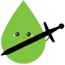

Ekşi Engel

Gireceğim Listedeki Yazarları Engelle/Engelini Kaldır
Tüm Engellerimi Kaldır
Engellenenleri Sessize Al (Deneysel)
Engellenen Başlıkları Kaldır (Deneysel)
Sessize alınmış yazarlar:
Loading...
Sessiz listesini yenile
Listeyi Dışa Aktar (CSV)
Ayarlar ve Yardım